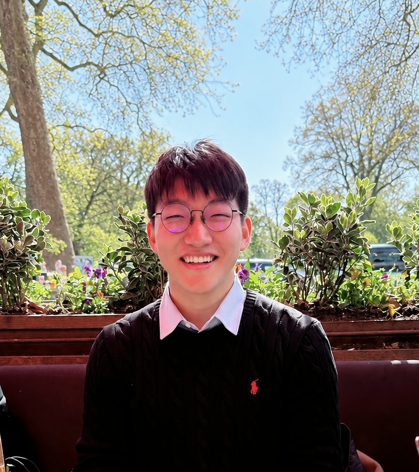

I want to make robots think and learn like us.
I’m a senior at Taejae University studying Data Science/AI and Natural Sciences, deeply in love with robot learning: vision-language-action models, world models, and manipulation.
Beyond my focus, I love robots as a whole: I have also designed circuit boards, mechanisms, and a RISC-V processor, and I would be glad to grow in any area of robotics.
I joined Taejae’s first cohort at 15. My dream is a robot built for any application, from search-and-rescue to robots in people’s homes.
Prospective robotics PhD student, Fall 2027

Featured research & publications
Research vision
Read the full visionWhat does it mean to be intelligent?
Most robots today repeat what they were trained on. I think three things are missing.
-
01
Isomorphic thinking
Knowing objects and actions by what they do to the robot’s own body.
In my work: off-policy RL on a real robot -
02
Intuition
A small forward model that predicts what each action will do before the robot moves.
In my work: VLA and world models -
03
Emerging Emotions
A slow internal state that sets how boldly the robot explores, regulated first by a parent model and later by itself.
In my work: IGEN
Selected honors
All honorsMedia
ROBOTIS Video
AI MANIPULATOR #13: Running Next-Generation LeRobot Policies on OMYBuilt from my evaluations of 2026’s VLA and world models.
The Korea Economic Daily Article in Korean
Ubion provides DeepCo Bot free for an elementary school AI class, with a path to international competitionsSeoul Shinmun Article in Korean
AI, taught by a science talent who grew up in Geumcheon